# Load packages
library(tidyverse)
library(viridis)
library(ggdark)Getting started in #rtistry
Generative art mixes randomness and order to create beautiful images. The \#rtistry hashtag helps find work from other Rtists.
tutorial
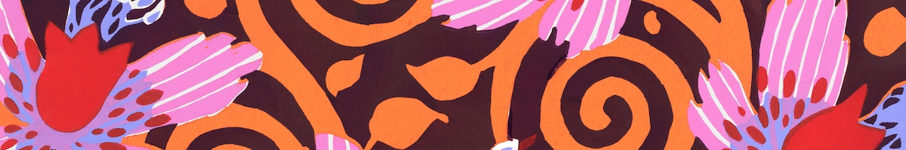
Artists in the R community have been using the #rtistry hashtag to demonstrate their gorgeous, dynamic art using only the R programming language. Their creations are amazing and they inspired me to try out generative art this dreary Sunday.
I am proud to showcase my first #rtistry plot ever! Kinda reminds me of KidPix (remember KidPix?!). I wanted to share how I did it and welcome any feedback or advice, as this is totally new and I’m not even sure if I am doing it right?
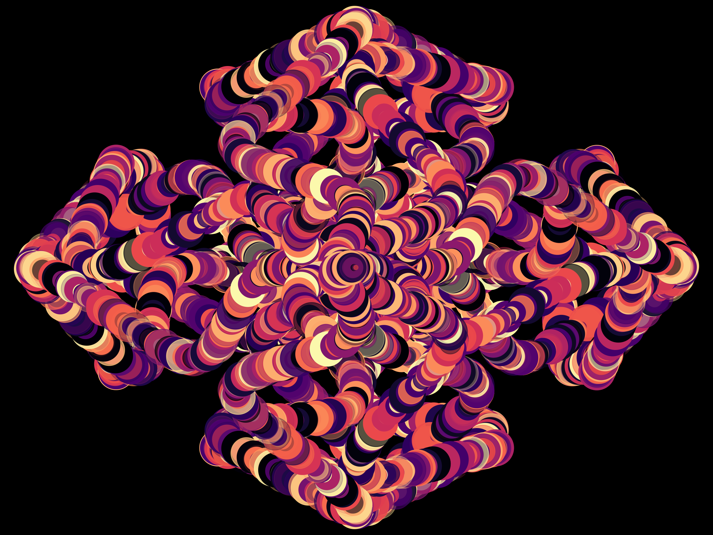
As always, we start with the packages we will use:
Write a parametric equation
First up is figuring out the function you will use to create the plot. I decided to go with a parametric equation for my first #rtistry plot. A parametric equation of a curve expresses the coordinates of points of the curve as functions of a variable. This blog post explains the concept very clearly and also has various examples of wonderful parametric equations.
Why parametric equations? First, even simple equations can create beautiful symmetries. Second, they are easy to modify to find the perfect plot.
The simplest parametric equation uses cosine and sine to make the unit circle:
circleFun <- function(center = c(0, 0), diameter = 1, npoints = 100){
r = diameter / 2
tt <- seq(0,2*pi,length.out = npoints)
xx <- center[1] + r * cos(tt)
yy <- center[2] + r * sin(tt)
return(data.frame(x = xx, y = yy))
}
dat <-
circleFun(c(1, -1), 2.3, npoints = 100)
ggplot(dat,aes(x, y)) +
geom_path()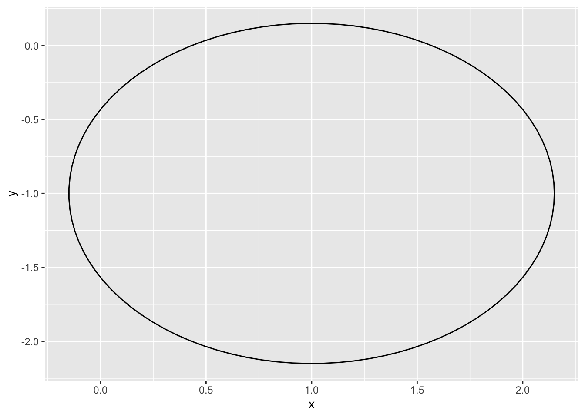
Let’s write a function to create a parametric equation. I based this equation on the aforementioned blog post equations. The parameters are:
- center: the center of the equation
- npoints: the number of points used to evaluate the function.
- c1, c2, c3, c4: the coefficients for the equation
genFun <- function(center = c(0, 0), npoints = 500, c1 = 2.5, c2 = -5, c3 = 4.28, c4 = 2.3){
t <- seq(0, 2*pi, length.out = npoints)
xx <- center[1] + c1*(sin(c2*t)*sin(c2*t))*(2^cos(cos(c3*c4*t)))
yy <- center[2] + c1*sin(sin(c2*t))*(cos(c3*c4*t)*cos(c3*c4*t))
a <- data.frame(x = xx, y = yy)
return(a)
}Playing around with the function, we see how the graph gets smoother with more points and how the shape changes with different coefficients.
dat <-
genFun(c(1,-1), npoints = 100)
ggplot(dat, aes(x, y)) +
geom_path()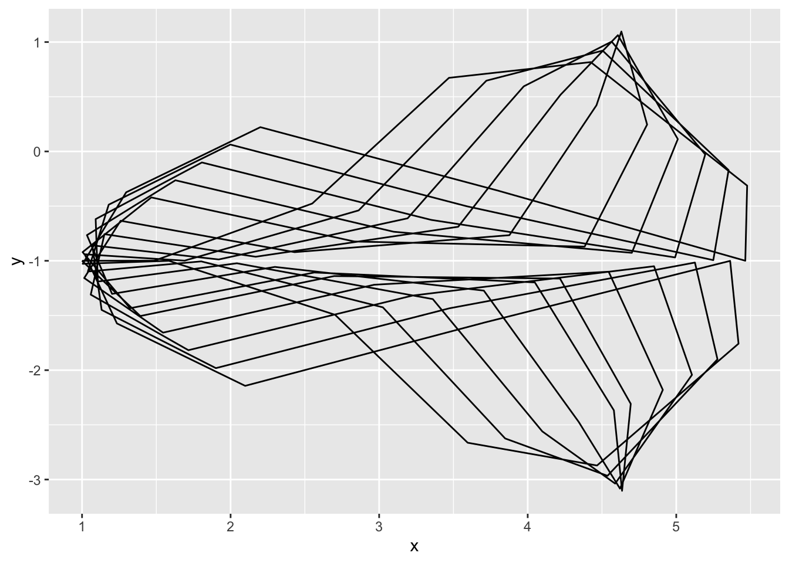
dat <-
genFun(c(1,-1), npoints = 500, c1 = 5, c2 = -3, c3 = 5, c4 = 2)
ggplot(dat, aes(x, y)) +
geom_path()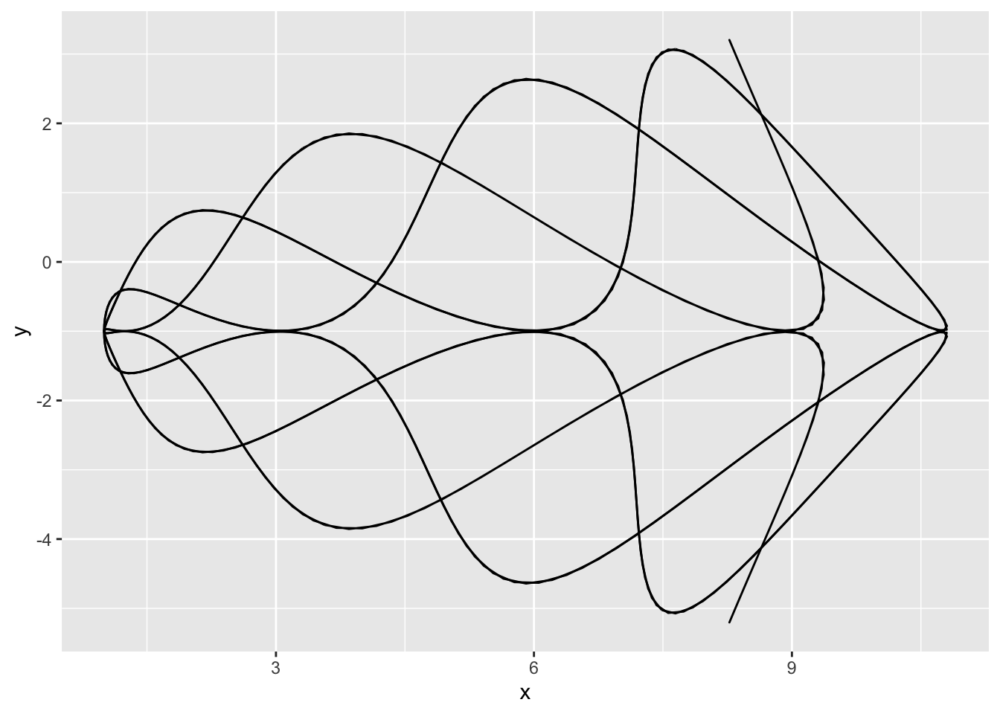
Create variation within the graph
Now that we have a basic shape, let’s play around with different aspects of the graph:
- geoms
- Aesthetic specifications
- Repetition
geoms
We started off with geom_path but can play around with other geoms too. Here it is with geom_line:
dat <-
genFun(c(1,-1), npoints = 5000)
ggplot(dat, aes(x, y)) +
geom_line()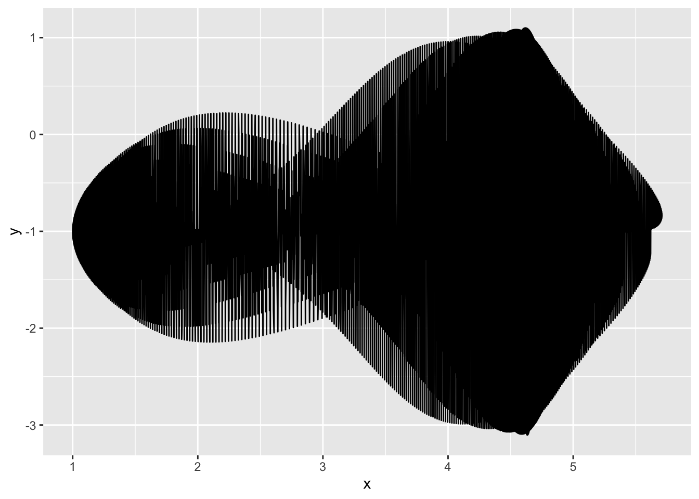
And with geom_point:
set.seed(1234)
dat <-
genFun(c(1,-1), npoints = 500)
dat %>%
ggplot(aes(x, y)) +
geom_point()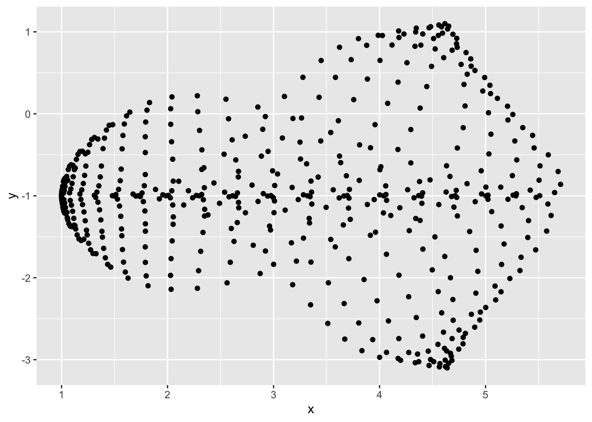
Aesthetic specifications
The {ggplot2} package has several aesthetic specifications available for plots. A full list can be found here.
We’re going to go ahead and get rid of all the background using theme_void().
Size
Let’s go with geom_point. In this case, we can start playing around with the aesthetics to see what would look interesting. With geom_point, you can edit the sizes of the points, so we create a column with random point sizes to create some variation.
set.seed(1111)
dat <-
genFun(c(1,-1), npoints = 5000) %>%
mutate(rand_w = sample(n())/3000)
dat %>%
ggplot(aes(x, y)) +
geom_point(size = dat$rand_w) +
theme_void()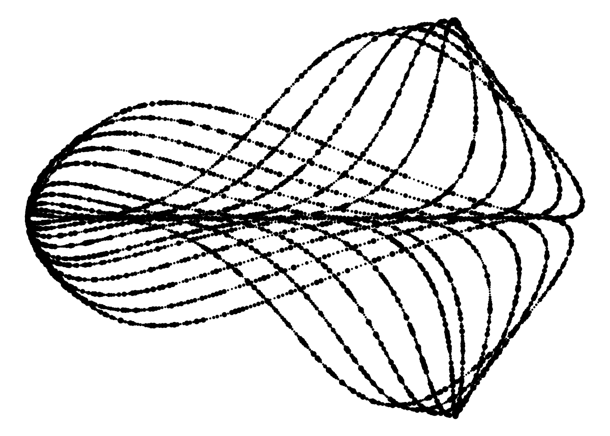
Shape
We could also change the shape of each of the points, but I liked the circles more:
dat %>%
ggplot(aes(x, y)) +
geom_point(size = dat$rand_w,
shape = 8) +
theme_void()Opacity
We could also change the opacity of the points:
set.seed(1234)
dat <-
dat %>%
mutate(rand_o = sample(n())/5000)
dat %>%
ggplot(aes(x, y)) +
geom_point(size = dat$rand_w,
alpha = dat$rand_o) +
theme_void()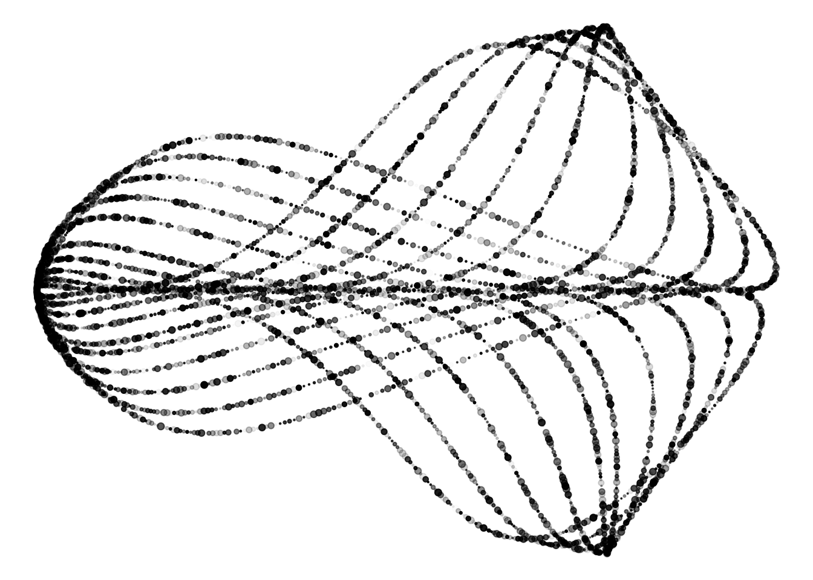
Color
We can also create a column for random numbers to ascribe colors to each point. I decided to use the magma color palette from the {viridis} package because it is so vibrant. Now that we’re not using only black points, we can use dark_theme_void() from the {ggdark} package for a fully black background.
set.seed(1234)
dat <-
dat %>%
mutate(rand_c = sample(n()))
dat %>%
ggplot(aes(x, y, color = rand_c)) +
geom_point(size = dat$rand_w,
alpha = dat$rand_o) +
scale_color_viridis(option = "magma") +
dark_theme_void() +
theme(legend.position = "none") # remove legendInverted geom defaults of fill and color/colour.
To change them back, use invert_geom_defaults().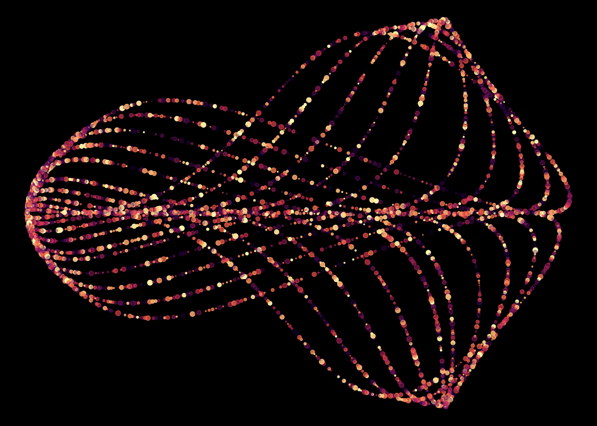
Repetition
Notice we added rand_w, rand_o, and rand_c so that we can randomly change up the size, opacity, and color of the plot. Let’s go back to our original generative function and them as parameters. Now we can change them without having to add them to the data frame externally from the function. (Apologies for the switching back and forth from dplyr to base R!)
genFun <- function(center = c(0, 0), npoints = 500, c1 = 2.5, c2 = -5, c3 = 4.28, c4 = 2.3, size_denom = 1, opacity_denom = 1, color_denom = 1){
t <- seq(0, 2*pi, length.out = npoints)
xx <- center[1] + c1*(sin(c2*t)*sin(c2*t))*(2^cos(cos(c3*c4*t)))
yy <- center[2] + c1*sin(sin(c2*t))*(cos(c3*c4*t)*cos(c3*c4*t))
rand_w <- sample(0:20, npoints, replace = TRUE)/size_denom
rand_o <- sample(1:100, npoints, replace = TRUE)/opacity_denom
rand_c <- sample(1:100, npoints, replace = TRUE)/color_denom
a <- data.frame(x = xx, y = yy, rand_w = rand_w, rand_o = rand_o, rand_c = rand_c)
return(a)
}Now playing around with the new parameters, I decided to go with this plot:
set.seed(1111)
dat <-
genFun(c(0, 0), npoints = 5000, c1 = 5, c2 = -3, c3 = 5, c4 = 2, size_denom = 1.5, opacity_denom = 50)
dat %>%
ggplot(aes(x, y, color = rand_c)) +
geom_point(size = dat$rand_w,
alpha = dat$rand_o) +
scale_color_viridis(option = "magma") +
dark_theme_void() +
theme(legend.position = "none") # remove legend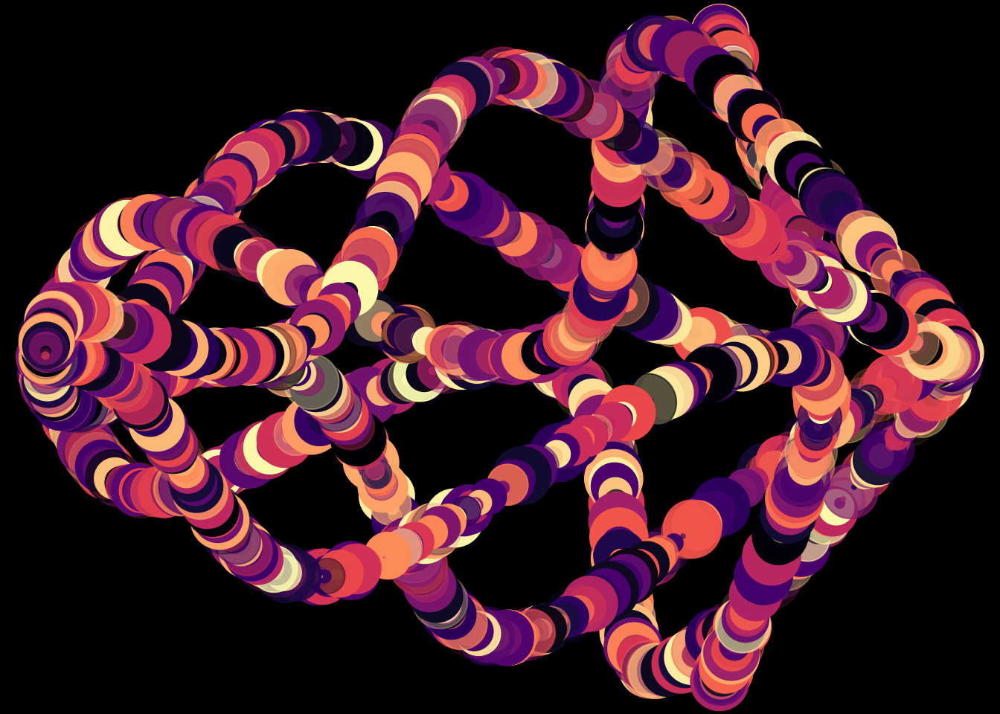
What this allows us to do is change up the generative function and build on our plot. I was interested in rotating the plot around the axis.
dat %>%
ggplot() +
geom_point(aes(x, y, color = rand_c),
size = dat$rand_w,
alpha = dat$rand_o) +
geom_point(aes(-x, -y, color = rand_c),
size = dat$rand_w,
alpha = dat$rand_o) +
geom_point(aes(-y, x, color = rand_c),
size = dat$rand_w,
alpha = dat$rand_o) +
geom_point(aes(-y, -x, color = rand_c),
size = dat$rand_w,
alpha = dat$rand_o) +
scale_color_viridis(option = "magma") +
dark_theme_void() +
theme(legend.position = "none") # remove legend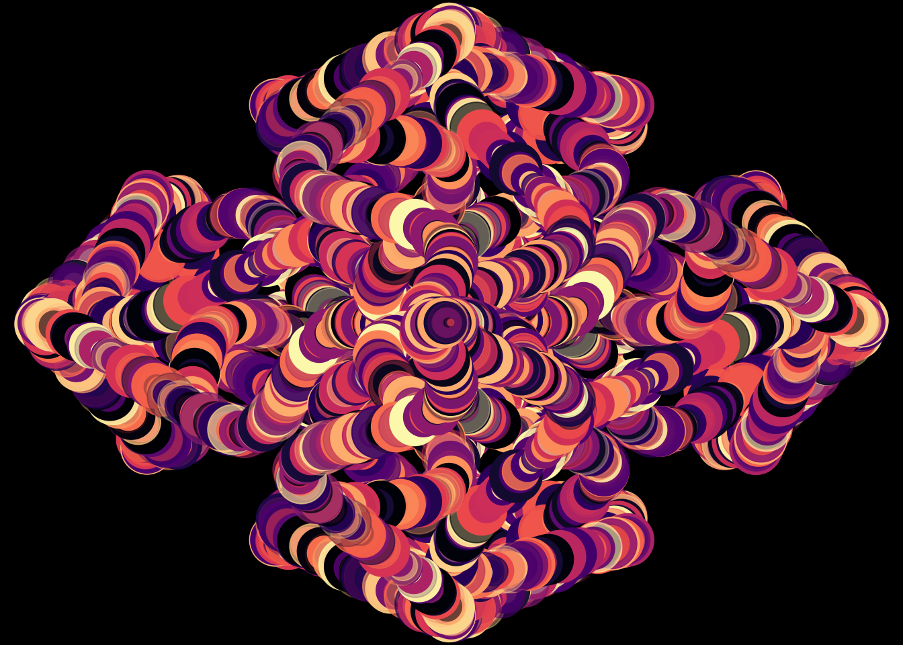
# ggsave(here::here("public", "img", "rtistry2.png"), dpi = 320, height = 6, width = 8) # this saves the imageTada! My first ever #rtistry plot.
Conclusion
This was my attempt to create generative art in R! It was fun to figure out how on earth to even get started and see how the plots change with new parameters on different attempts. I welcome any thoughts and please share your art using the #rtistry hashtag with me!
rtists I follow
Packages for creating generative art
- djnavarro’s flametree
- ijeamaka_a’s contourR
- cutterkom’s generativeart
Liked this article? I’d love for you to retweet!
New post! 📣 Interested in using #rstats to create KidPix-like #generativeart 🎨 ? Check out my first foray into #rtistry using a parametric equation here! 👩🏻🎨 https://t.co/ykkddoK5tm
— Isabella Velásquez (@ivelasq3) May 11, 2021
reposted due to typo 😅 pic.twitter.com/V5bFSvDsOR